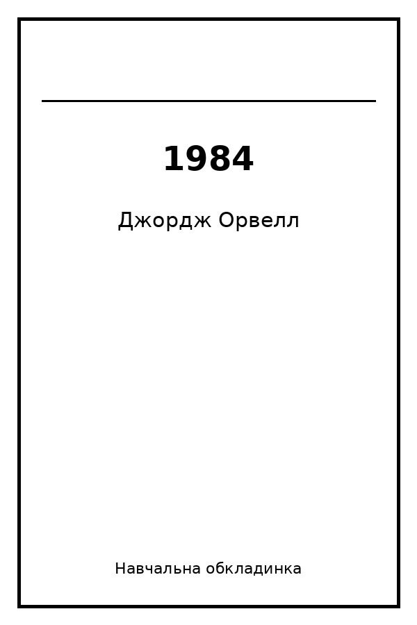
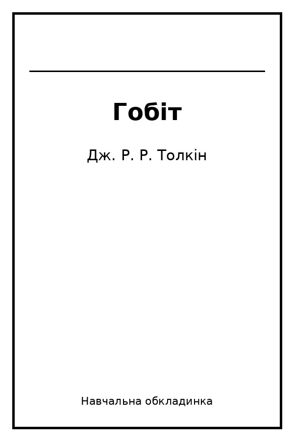
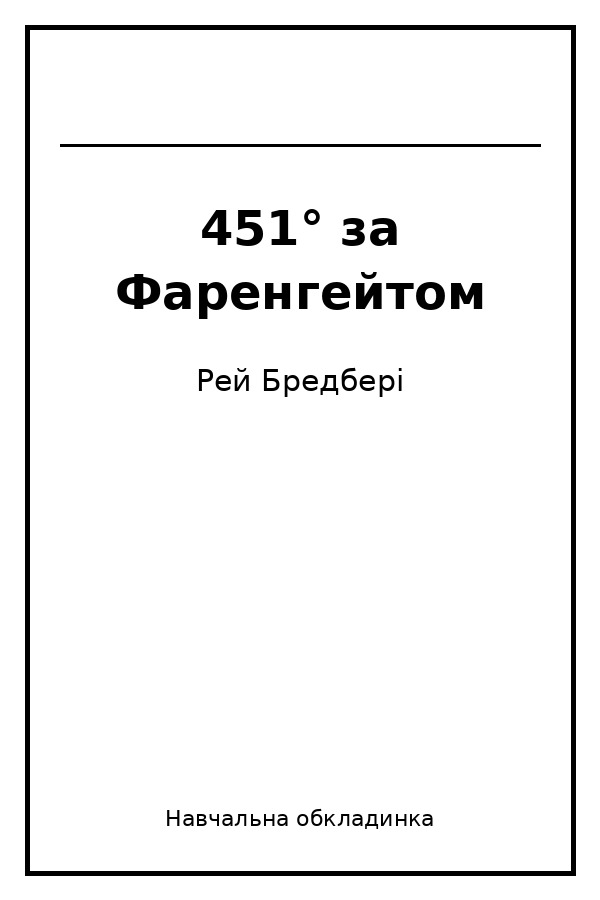
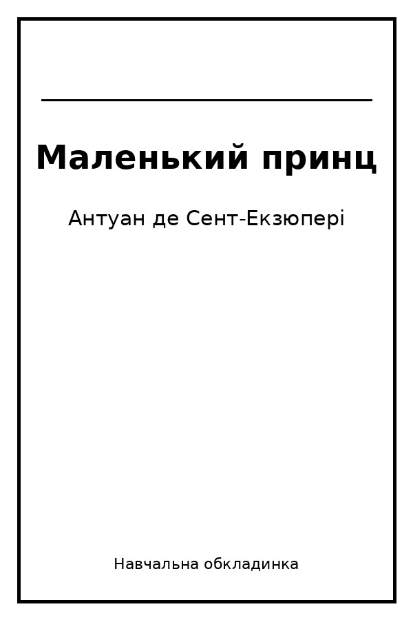
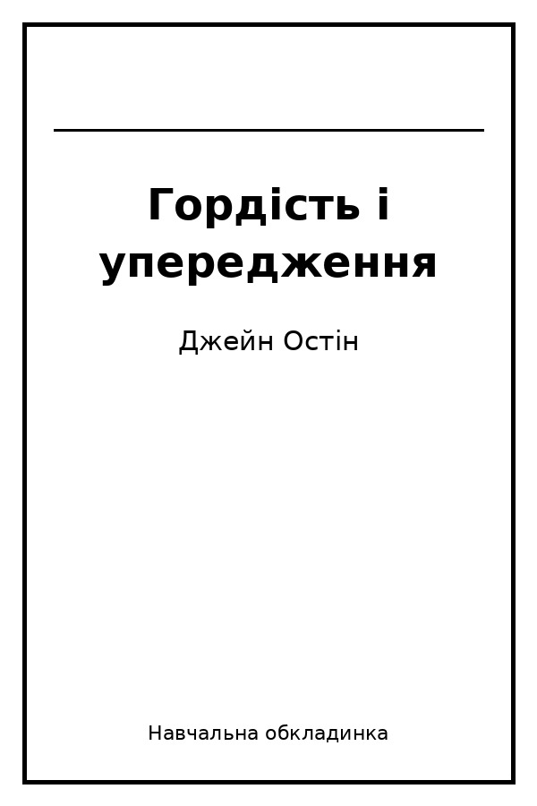
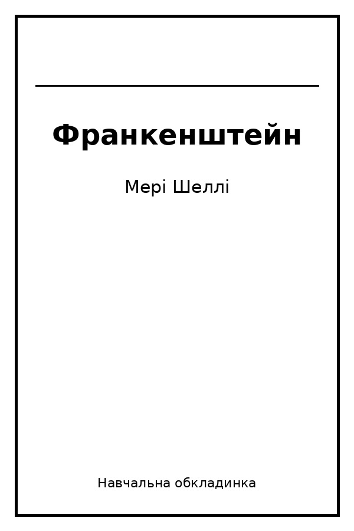

Про каталог
Ця сторінка є навчальним каталогом книг для практичного опрацювання семантичної розмітки HTML5, навігації, доступності та перевірки валідності.
Лабораторна робота №3 — HTML5: таблиці, списки, медіа та навігація.
Виконав: Аксьонов Ігор, група ІН-43-5.
Ця сторінка є навчальним каталогом книг для практичного опрацювання семантичної розмітки HTML5, навігації, доступності та перевірки валідності.
У каталозі наведено шість книг. Натисніть на назву книги, щоб перейти до сторінки деталей.

Автор: Джордж Орвелл
Жанр: Антиутопія
Рік видання:
Кількість сторінок: 328
Опис: Роман про суспільство тотального контролю, де держава намагається керувати інформацією, поведінкою та думками людей.
Прочитано: так

Автор: Дж. Р. Р. Толкін
Жанр: Фентезі
Рік видання:
Кількість сторінок: 310
Опис: Пригодницька історія про Більбо Торбина, який вирушає у подорож разом із гномами та поступово відкриває у собі сміливість.
Прочитано: так

Автор: Рей Бредбері
Жанр: Фантастика
Рік видання:
Кількість сторінок: 249
Опис: Історія світу, у якому книги заборонені, а головний герой починає сумніватися у правилах системи, частиною якої він є.
Прочитано: ні

Автор: Антуан де Сент-Екзюпері
Жанр: Класика
Рік видання:
Кількість сторінок: 96
Опис: Філософська казка про дружбу, відповідальність і здатність бачити важливе не лише очима, а й серцем.
Прочитано: так

Автор: Джейн Остін
Жанр: Класика
Рік видання:
Кількість сторінок: 432
Опис: Роман про стосунки, суспільні очікування та помилкові перші враження на прикладі історії Елізабет Беннет і містера Дарсі.
Прочитано: ні

Автор: Мері Шеллі
Жанр: Класика
Рік видання:
Кількість сторінок: 280
Опис: Історія вченого Віктора Франкенштейна та наслідків його експерименту зі створення живої істоти.
Прочитано: ні